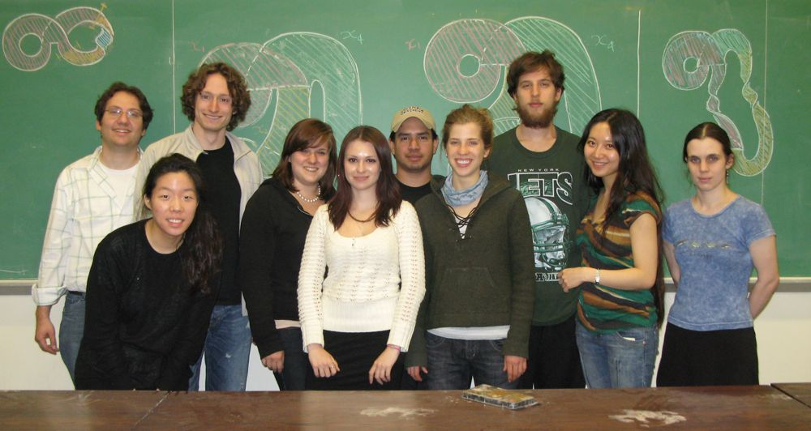

Left to Right: Dan, Jessica, Jon, Emily, Katrine, Adalberto, Kari, Adam, Delia, and Cayenne. Missing: Ananth, Sasha, and So.
|
|
|
|
|
| Jan 27 | 8:00pm-10:00pm | Jon | Introduction |
| Feb 3 | 8:00pm-9:00pm | Delia | Knots, links, smooth versus polygonal, diagrams, and the Reidemeister moves |
| 9:00pm-10:00pm | Adam | Properties and invariants: Crossing, unknotting, linking, tri-colorability, composition, prime | |
| Feb 10 | 8:00pm-9:00pm | Kari | Topology of surfaces: Orientability, classification, Euler characterisitic, genus |
| 9:00pm-10:00pm | Sasha | Seifert surfaces: Seifert's algorithm, Seifert graph, genus, additivity of genus | |
| Feb 17 | 8:00pm-9:00pm | Katrine | The Seifert matrix: Computation, examples, modification under surgery |
| 9:00pm-10:00pm | Jessica | Invariants from the Seifert matrix: Signature, determinant, Alexander polynomial | |
| Feb 24 | 8:00pm-9:00pm | Emily | Briads: Braid group, Alexander's Theorem, braid index, positive braids |
| 9:00pm-10:00pm | Adalberto | The Lorenz template: Lorenz knots, return map, trip number 1 => unknotted, links unsplittable (Thm 4.1) | |
| Mar 3 | 8:00pm-9:00pm | So | Symbolic dynamics I: The map in Prop 2.4.1 is onto. All torus knots occur (Thm 6.1) |
| 9:00pm-10:00pm | Kari | Symbolic dynamics II: The map in Prop 2.4.1 is invertible. Corollary 2.4. | |
| Mar 10 | 8:00pm-9:00pm | Cayenne | Lorenz knots as positive braids: Proof of Thm 5.1 and the conjecture that trip number = braid index, using Thm 10.5.1 in Cromwell. Time permitting, Prop. 10.5.2 and 10.5.3 in Cromwell.. |
| 9:00pm-10:00pm | Ananth | Genus bounds: Genus of the positive braid template (part of Thm 5.2). Proof of Cor. 5.3. Using Cor. 5.4 and 5.5 to prove certain knots are not Lorenz. | |
| Mar 17 |
|
||
| Mar 24 | 8:00pm-9:00pm | Katrine | Linear systems in 2D, phase-portraits, trace-determinant classification |
| 9:00pm-10:00pm | Sasha | Dynamical classification in 2D, hyperbolicity, linear systems in 3D | |
| Mar 31 | 8:00pm-9:00pm | So | Non-linear systems: existence/uniqueness, equilibria, the linearization theorem |
| 9:00pm-10:00pm | Ananth | Analyzing the Lorenz system from the ODE | |
| Apr 7 | 8:00pm-9:00pm | Dan | Numerical methods: how does your computer draws the Lorenz flow? Euler, Taylor, Runge-Kutta |
| 9:00pm-10:00pm | Dan | Tucker's proof: the Lorenz attractor exists! | |
| Apr 14 | 8:00pm-9:00pm | Emily | Template theory: Symbolic dynamics, subtemplates, isotopic inflation |
| 9:00pm-10:00pm | Katrine | Smale's horseshoe: Symbolic dynamics of the horseshoe map, flow, and template | |
| Apr 21 | 8:00pm-9:00pm | Adam | Ghrist's proof of the existence of a universal template, Part I |
| 9:00pm-10:00pm | Delia | Ghrist's proof of the existence of a universal template, Part II | |
| Apr 28 | 8:00pm-9:00pm | Jessica | Corollaries: Lorenz-like templates, universal flows |
| 9:00pm-10:00pm | Cayenne | Fibered knots, the induced flow on the complement, and the search for the Figure 8 knot | |
BLOG:
April 24
Jessica will use Ghrist's theorem to prove that Lorenz-like templates are also universal and to give sufficient conditions for universality. She will then describe the Plykin attractor and prove that the associated flow is universal.
Cayenne will take us full circle to fibered knots (no pun) and Birman-Williams' Conjecture 1 in the detailed Ghrist paper:
http://www.math.uiuc.edu/~ghrist/preprints/universal.pdf
For background on the Plykin attractor, see Example 2.1.6 in:
http://opensiuc.lib.siu.edu/math_books/1/
For fibered knots, see Section 2.3.4. For the rest of Jessica's talk, see Section 3.2.3.
For the Plykin attractor, you can also stare in bewilderment at the animations:
http://www.sgtnd.narod.ru/science/hyper/Plykin/eng/plykin.htm
and fractal-like pictures:
http://www.ams.org/notices/200601/fea-coudene.pdf
See you on our last Tuesday! Come hungry.
April 18
This week Adam and Delia will demonstrate the existence of a universal template, using the template theory descibed by Emily, following the outline in:
http://www.math.uiuc.edu/~ghrist/preprints/eraams.pdf
The details are in:
http://www.math.uiuc.edu/~ghrist/preprints/universal.pdf
And the corresponding talk is here:
http://www.math.uiuc.edu/~ghrist/talks/knottedflowlines.pdf
You should all have received hard copies of the above papers. I do not expect you to go through the detailed paper in detail as it's very, well, detailed. But do try to understand the main scheme of the proof, as you'll be better able to hang the details on it as Adam and Delia present them tomorrow.
Next week (our last), Jessica will discuss several interesting corollaries of this theorem, including the existence of a bona fide universal flow, and Cayenne will take us full circle to fibered knots (no pun) and Birman-Williams' Conjecture 1 in the detailed Ghrist paper.
April 8
You should have received Dan's MatLab code. We now turn to the Ghrist's proof of the existance of a universal template and flow...that is, one exhibiting all knots and links as periodic orbits. Next Tuesday, Emily will introduce the necessary notions from template theory and symbolic dynamics. Please read two of the three articles I gave you last week as preparation:
"Chaotic knots and wild dynamics" is a wonderful expository article touching on all the themes we've been exploring:
http://www.math.uiuc.edu/~ghrist/preprints/solitons.pdf
"Flow's on S^3 supporting all links as orbits" is a research announcement summarizing the Ghrist's proof.
http://www.math.uiuc.edu/~ghrist/preprints/eraams.pdf
Then Katrine will explore the fundamental example known as Smale's horseshoe, which you should preview here:
http://en.wikipedia.org/wiki/Horseshoe_map
The following week, Delia and Adam will discuss the proof in greater detail.
April 4
Dan will be speaking for the full session this Tuesday. His first topic will be numerical methods for approximating solutions to ODEs. The main methods he'll discuss are Euler and Runge Kutta. He'll also explain some of the computer code he is using to implement them. For background, please see:
http://en.wikipedia.org/wiki/Numerical_ordinary_differential_equations
http://en.wikipedia.org/wiki/Euler_method
http://en.wikipedia.org/wiki/RungeKutta_method
The second topic he'll discuss is Tucker's proof that the geometric model of the Lorenz attractor (including the template) accurately reflect the dynamics of the Lorenz system. I have uploaded two fantastic survery articles on the the result for you to read. One is a 2 pages in Nature by Ian Stewart. The other is 15 pages from the Mathematical Intellingencer in 2000, and has a great account of the history. I hope you enjoy them!
http://math.columbia.edu/~jbloom/Stewart.pdf
http://math.columbia.edu/~jbloom/Viana%20Article.pdf
PS. The geometric model is also fully described in the remaining sections of Chapter 14. They then prove that this geometric model contains our template as a strange attractor.
Tucker's actual thesis is here, but it is hard to make sense of it without more background:
http://www.math.uu.se/~warwick/main/thesis.html
Mar 23
Welcome back! I hope you enjoyed spring break. Tomorrow evening we will have the first two of four lectures on the basics of dynamical systems. Please follow along in the Hirsch-Smale book, which reads like a novel (if that could ever be said for a math textbook). You may find that material you've learned in several courses comes together in a beautiful, sensible, and satisfying way.First, Adalberto will introduce 2D linear systems and discuss the classification given by the trace-determinant plane (Ch. 2, Ch. 3, Sec. 4.1). Then Sasha will derive the dynamical classification in 2D and introduce 3D linear systems (Sec. 4.2, Sec. 6.1). Next week, So will discuss non-linear systems (Ch. 7) and Ananth will apply what we've learned to analyze the Lorenz system from the equations themselves (Ch. 14).
Mar 5
So this is our last week with the Birman/Williams paper. Please read Section 4 and Section 5 through Corollary 5.5 (pages 59 - 63).
It's only a few pages but quite dense, and you can safely ignore the parts on fibered knots and fundamental groups since we won't have time to discuss these notions. As you read, remember that a Birman/Williams positive crossing is a Cromwell negative crossing. From the reading and Figure 5.1, convince yourself that a Lorenz knot K can be represented as the closure of a positive braid with the number of strands equal to the trip number. Using Thm 10.5.1 in Cromwell, complete the proof of their conjecture that trip number equals the braid index. Even without knowing about fibered knots, you should still be able to understand most of the proof of the genus bound in Corollary 5.3. In particular, you should be able to deduce equation (5.1) by using Seifert's algorithm on the link diagram presented as the closure of a positive braid and applying what we know about computing the genus of Seifert surfaces. In fact, this will be a minimal genus Seifert surface.
As pointed out by Adam, here is another way of thinking about the map Kari defined. Identify L with 0 and R with 1. Then we map the branch line [0,1] to sequences in L and R by simply expressing the real number x in base 2. Those x with finite decimal representations correspond to sequences which stop (except x = 0 or x = 1). And in base 2, multiplication by 2 is simply a shift to the left!:
.01100101101...
.1100101101...
.100101101...
At this stage, to put the behavior we're witnessing on the Lorenz template in context, you might enjoy the wiki on chaos theory...it has plenty of history, applications, and links:
http://en.wikipedia.org/wiki/Chaos_theory
Here is our doubling map:
http://en.wikipedia.org/wiki/2x_mod_1_map
And other chaotic maps:
http://en.wikipedia.org/wiki/List_of_chaotic_maps
Feb 28
As I mentioned last week, you should be reading the first two sections of the Birman/Williams paper, with an eye toward understanding the results in the symbolic dynamics section 2.4, consolidated at the very beginning of Section 3. If you don't understand their proof, try to come up with your own.
It may help to take another look at the Birman talk and the videos in the first couple sections of the AMS article:
http://www.ams.org/featurecolumn/archive/lorenz.html
Kari will tell us about the correspondence between Lorenz orbits and Lorenz words. This will help us determine which knots occur in the flow.
Here are some torus knots for your viewing pleasure...are you able to find any on the template?
http://katlas.math.toronto.edu/wiki/36_Torus_Knots
So will prove they are all hiding there!
I just discovered this amazing free software called SeifertView:
http://www.win.tue.nl/~vanwijk/seifertview/index.htm
Be sure to check out the examples on the website and if you're intrigued go ahead and download the software. You can enter knots in braid notation or use their examples. You can even take a rollercoaster ride along the knot/surface!
And for $450 you can buy a Seifert surface of the Borromean rings:
http://www.bathsheba.com/math/borromean/
See you Tuesday, when we will sample some South American fare courtesy of Adalberto.
Feb 21
This week Emily will introduce braids and Adalberto will begin our study of the Lorenz paper. I've attached an introduction to the theory of braids that Joan Birman is currently writing for a course she's teaching to high school students through the Science Honors Program at Columbia. She has been kind enough to let me share this draft with you, and would be grateful for any feedback you might have. Now Cromwell doesn't give much background on braids so...
0) Check out http://en.wikipedia.org/wiki/Braid_group
1) Please read enough of the attached friendly introduction to help you understand (0), together with Section 10.1 of Cromwell (every link is the closure of a braid).
2) Then check out the first two sections of:
http://www.ams.org/featurecolumn/archive/lorenz.html
The videos are amazing.
3) Finally, view the first half (through slide 20) of Birman's talk linked to here and on the website:
http://www.math.columbia.edu/~jb/Lorenz-general-audience.pdf
In particular, try to understand the notion of the Lorenz template and the meaning of the statement of the theorem on slide 15.
This theorem is proven in Section 2 and restated at the beginning of Section 3 of the paper, so the assigned reading for next Tuesday (March 3rd) will be the first two sections, with the proof of this theorem in mind. To that end, do not worry about understanding the details of the dynamics in the Lorenz paper. We will come back to this after the break. For now, we are going to assume that the Lorenz template is an accurate geometric model and simply study the template itself.
Don't forget to compute the invariants of our mystery knot and bring in your work (I didn't mean to tell you its identity ahead of time, hopefully you've forgotten!).
Feb 15
By now you should be able to: 1) Find a Seifert surface for a knot or link (by inspection or Seifert's algorithm) and identify it's homeomorphism type (by calculating the Euler characteristic and from that the genus and then appealing to the Classification Theorem).
If you're not completely comfortable with this, I strongly urge you to review, as we're going to up the ante a bit this Tuesday. We'll hear from Katrine and Jessica about the Seifert matrix and the invariants one can construct from it. After this you should be able to:
2) Construct a Seifert matrix.
3) Calculate the signature and determinant.
I'll be giving you all a short assignment on Tuesday, due the following week, asking you to work out an example or two (ones that are less tedious than the example in Cromwell). Here again is the relevant reading from Cromwell:
Surfaces and topology: 2.1, 2.2, 2.3, 2.6, 2.7, 2.11
Seifert surfaces: 5.1, 5.2, 5.5, 5.6
Seifert matrix and invariants: 6.1, 6.5, 6.6, 6.7
Don't fret if you have trouble making sense of the notion of a basis of cycles, this should be explained in practical terms on Tuesday.
FEB 6
I hope you found the first talks interesting and helpful for understanding those sections in Chapters 1 and 3. So far we have discussed two kinds of invariants:
1) Easy to compute but hardly discriminating: tricolorability (and linking number for links)
2) Hard to compute (a minimum value): crossing number, unknotting number.
What we'd really like is an invariant for knots that is both computable and fairly discriminating. The most accessible such invariants are constructed by using a Seifert surface for the knot, that is a two-sided surface whose boundary is the knot. We will see every knot K has a Seifert surface S (in fact many), and that there is a natural way to associate a matrix M to S (in fact many such matrices). We will then use functions from linear algebra to extract numbers from the matrix M that, miraculously, only depend on the original knot. This leads to the signature, determinant, and Alexander polynomial. To see the power of these invariants, check out the tables on pages 146 and 301. I've designed the contents of the next four lectures to tell exactly this story. The relevant background on surfaces is contained in Chapter 2 of Cromwell, with the most important concepts being those of orientability, genus, and Euler characteristic, and the classification of compact surfaces with boundary. Especially if you haven't taken a course in topology, I highly recommend reading Chapter 5, Sections 1, 2, and 4 of "What is Mathematics?" for a very intuitive account:
Here are the sections in Cromwell we will draw on over the next two weeks. Please read through Section 5.2 before this Tuesday, and the rest by the next Tuesday:
Surfaces and topology: 2.1, 2.2, 2.3, 2.6, 2.7, 2.11
Seifert surfaces: 5.1, 5.2, 5.5, 5.6
Seifert matrix and invariants: 6.1, 6.5, 6.6, 6.7 (Note: We don't have time to develop the whole theory of the homology group H_1 like Cromwell does in Chapter 6. Instead, we will find a basis of loops by completing a maximal tree in the Seifert graph...this is much more straightforward and will be explained in Lecture 5).
Here is the knot atlas I told you about. The Rolfsen table is a good place to start. Tricolorability is not in the book, but it is nicely described on Wiki
Extra credit if you can do this consistently.